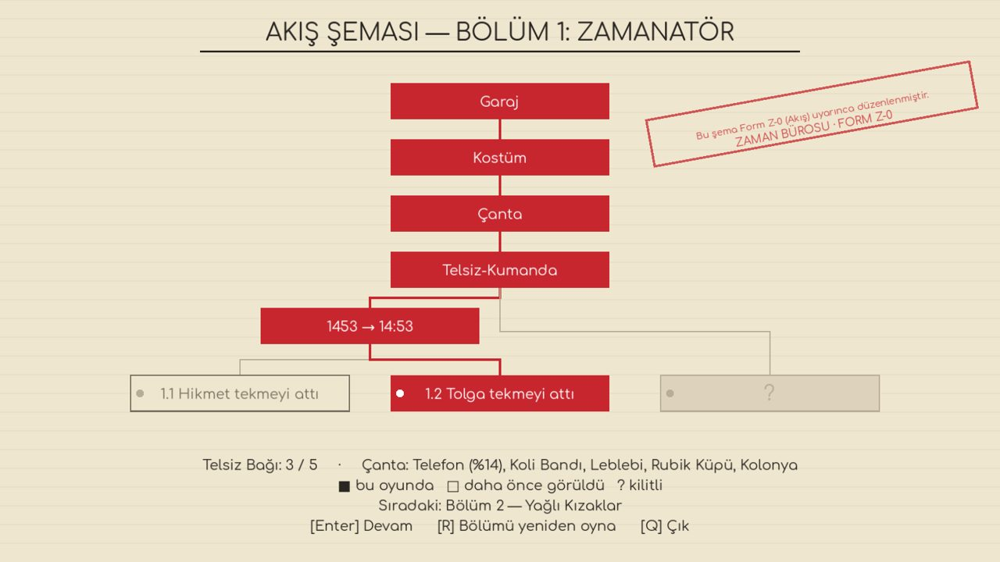

Tolga Fatih'e risk tablosu sunuyor, Urban'ın topunu yanlışlıkla havaya uçuruyor, Bizans'ta yedi nüsha form dolduruyor ve pazartesi 09:00 toplantısına yetişmeye çalışıyor.
Tolga pitches a risk matrix to Sultan Mehmed, accidentally blows up Urban's cannon, fills out forms in seven copies in Byzantium and still tries to make the Monday 9 a.m. meeting.
farklı final
different endings
Her seçim tarihi değiştirir. Aynı İstanbul'u iki kez fethedemezsin.
Every choice bends history. You won't conquer the same Istanbul twice.
saat ilk oynanış
hours per playthrough
Tek oturuşta biter, tekrar oynattırır. Yayın için biçilmiş kaftan.
Fits in one sitting, begs for a replay. Made for streams.
tamamen seslendirilmiş
fully voiced
Her karakter konuşuyor. Hikmet Amca'nın telsizi dahil.
Every character talks. Including Uncle Hikmet over the walkie-talkie.
tarihi doğruluk
historical accuracy
Ayasofya, Galata, surlar ve kızak yolu gerçeğine sadık. Tavuklar değil.
Hagia Sophia, Galata, the walls and the ship slipway are faithful. The chickens are not.
FragmanTrailer
Oyundan karelerScreenshots
Her bölümün sonunda bir akış şemasıA flowchart after every chapter
Neyi seçtin, neyi kaçırdın, hangi yollar hâlâ kilitli: hepsi Zaman Bürosu'nun resmî şemasında. Bölümü baştan oynayıp başka bir kapıyı açabilirsin.
What you chose, what you missed, which paths are still locked: it's all on the Time Bureau's official chart. Replay a chapter and open another door.
Tolga'nın çantasındaki beş eşya (leblebi, koli bandı, telefon…) her sahnede başka bir işe yarar. Ya da yaramaz.
The five items in Tolga's bag (roasted chickpeas, duct tape, a phone…) do something different in every scene. Or don't.

KurulumInstallingİmzasız bağımsız oyun olduğu için sistem bir kez uyarabilir. Normaldir.It's an unsigned indie game, so your system may warn you once. That's normal.
🪟 Windows
Setup dosyasını indir ve çalıştır. Yönetici izni gerekmez. “Bilgisayarınızı korudu” çıkarsa: Ek bilgi → Yine de çalıştır.
Download and run the Setup file. No admin rights needed. If you see “Windows protected your PC”: More info → Run anyway.
🍎 macOS
Zip'i aç, uygulamaya sağ tıkla → Aç. Intel ve Apple Silicon'da çalışır.
Unzip, then right-click the app → Open. Runs on Intel and Apple Silicon.
🐧 Linux / Steam Deck
Zip'i aç ve GercekTarihBuDegil dosyasını çalıştır. Steam Deck'te “Steam dışı oyun ekle” ile kütüphaneye ekleyebilirsin.
Unzip and run GercekTarihBuDegil. On Steam Deck, use “Add a Non-Steam Game” to put it in your library.
📺 Yayıncılar ve içerik üreticileriStreamers & creators
Oyunu yayında ve videolarında dilediğin gibi kullanabilir, gelir elde edebilirsin. İzin almana gerek yok. 23 finalin hepsini bulan var mı, merak ediyoruz.
Stream it, make videos, monetize them: no permission needed. We're curious whether anyone finds all 23 endings.